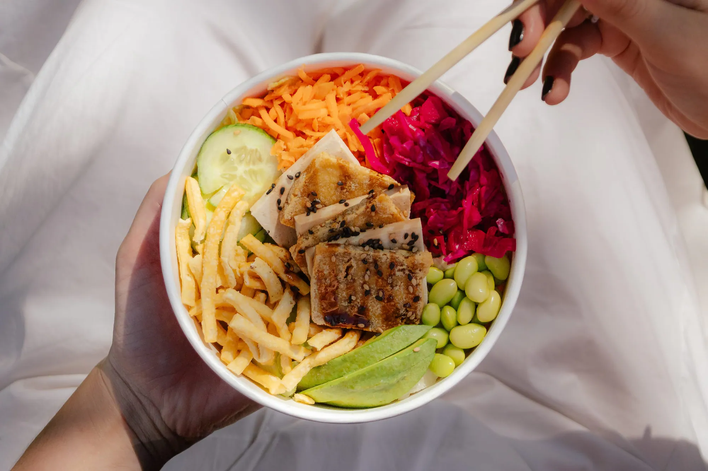
Photographie
Une série photo pour Aki Sushi qui couvre tout le menu : bubble teas, sushis, poke bowls et plus encore. Captées en lumière naturelle, les images mêlent culinaire et lifestyle, avec du vrai monde, dehors, le verre et l'assiette en main. Une direction qui donne faim et qui respire l'été. J'ai dirigé le plateau, signé la direction artistique et fait le montage.
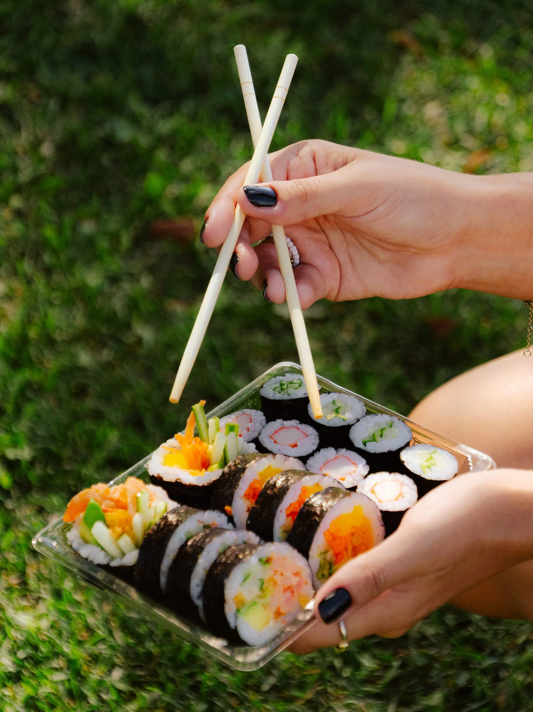
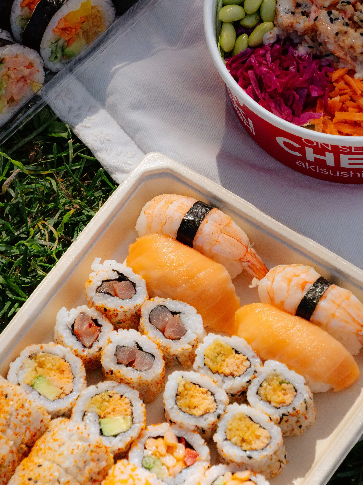
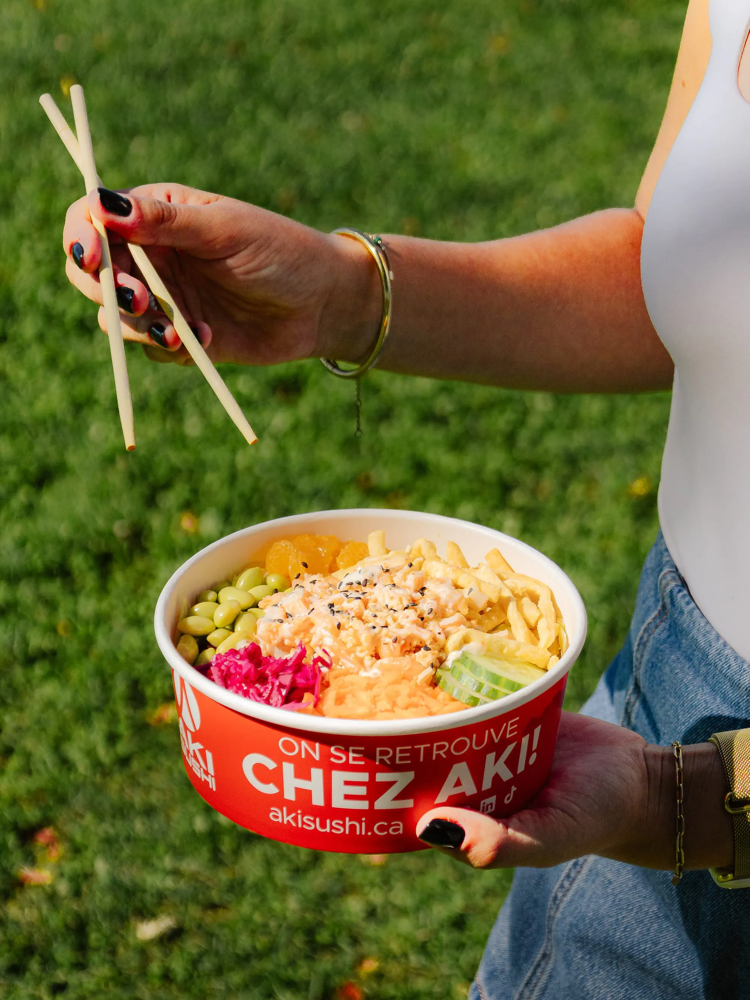
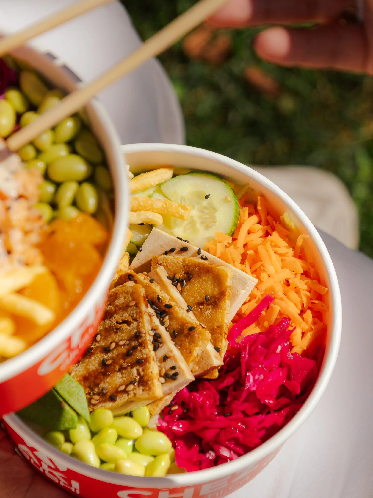
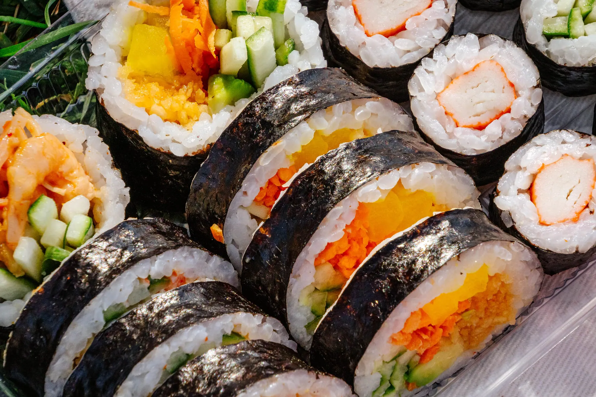
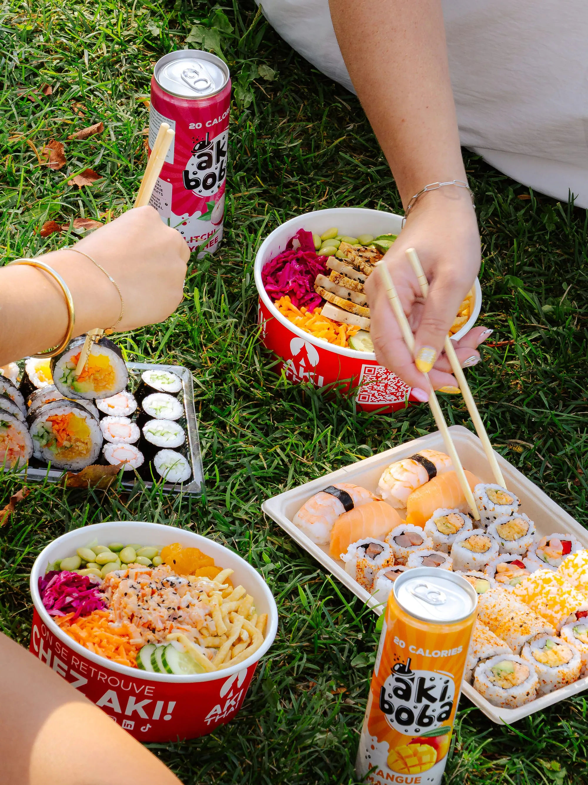
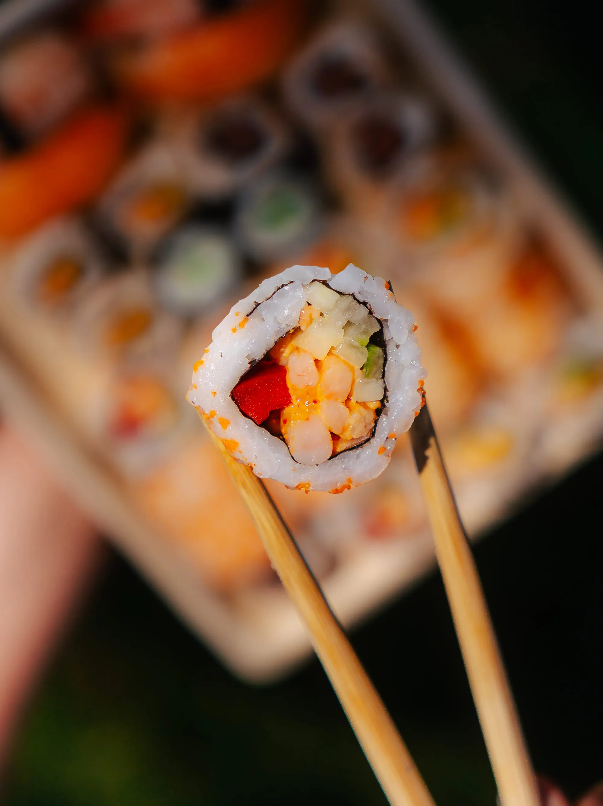
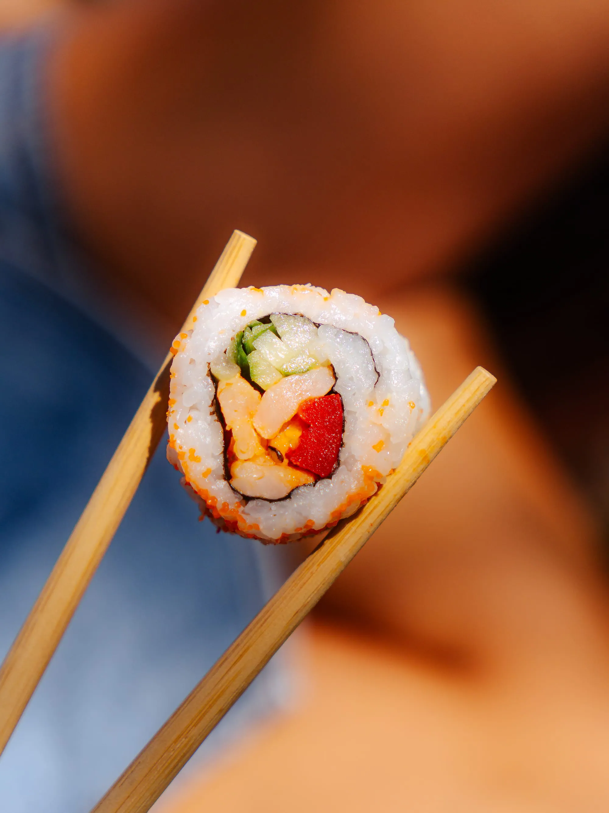
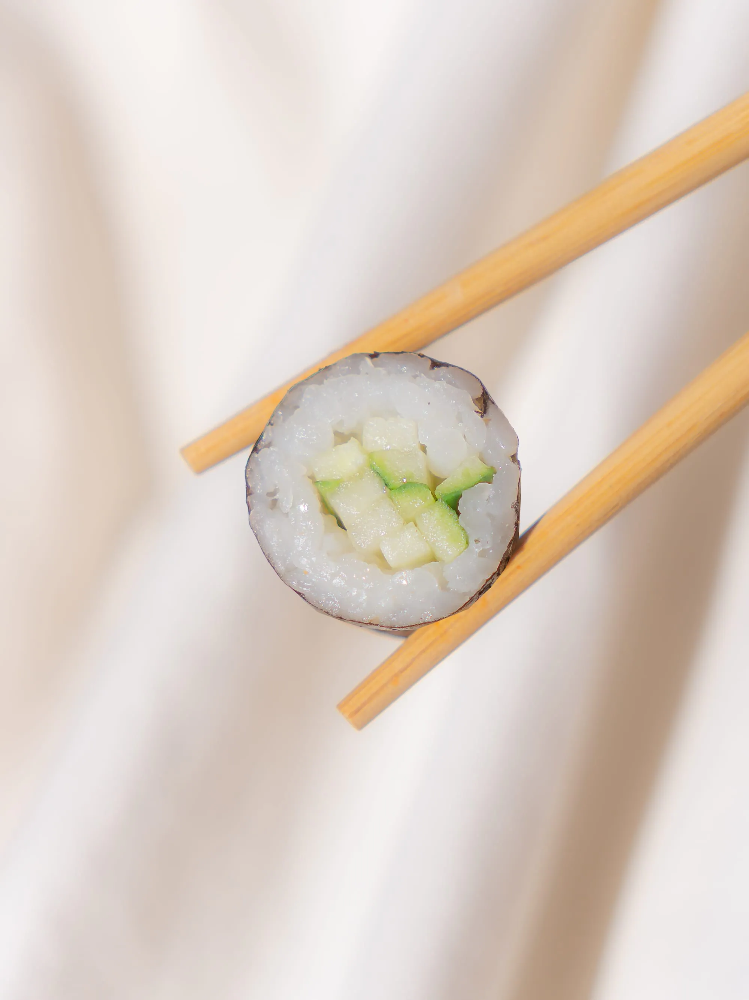
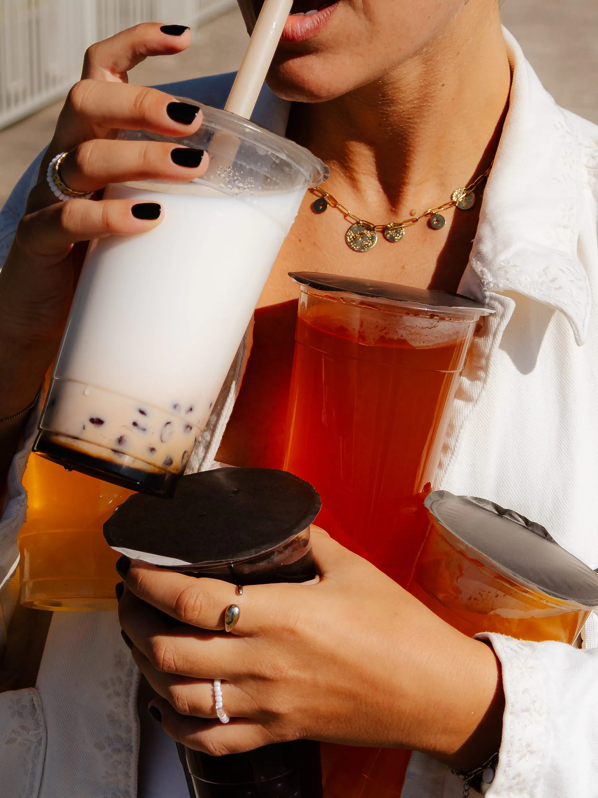
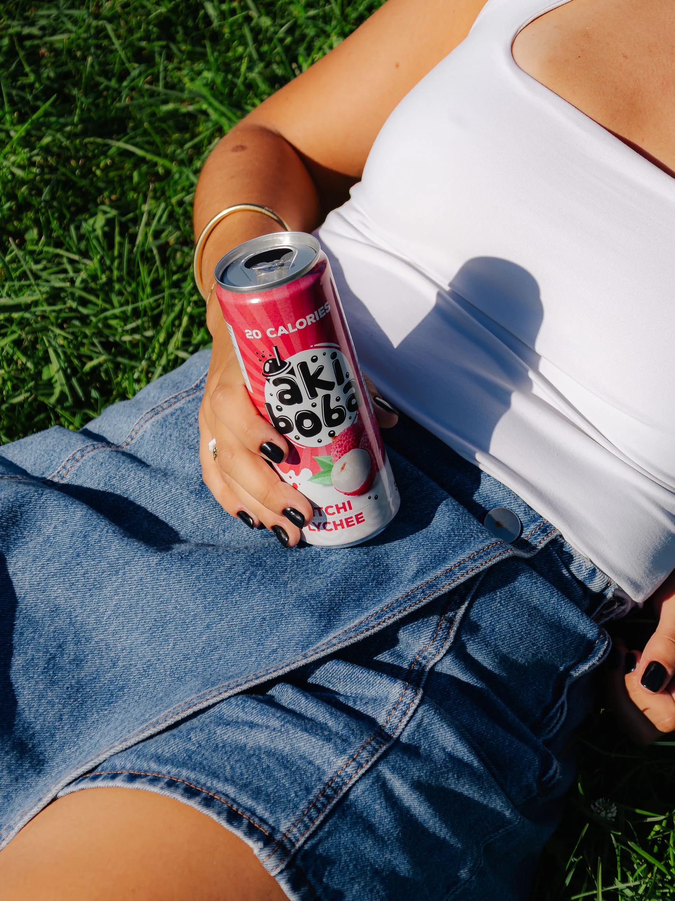